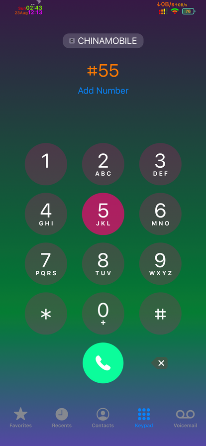
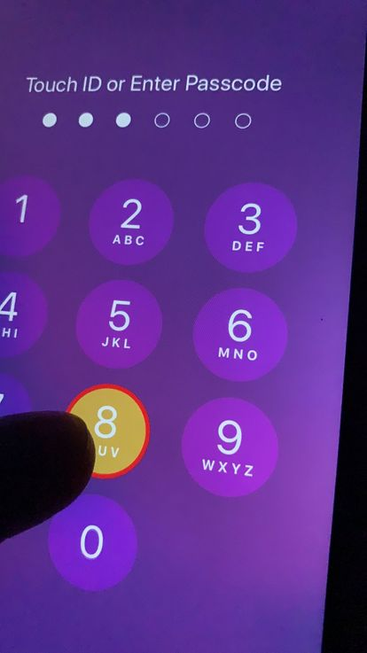
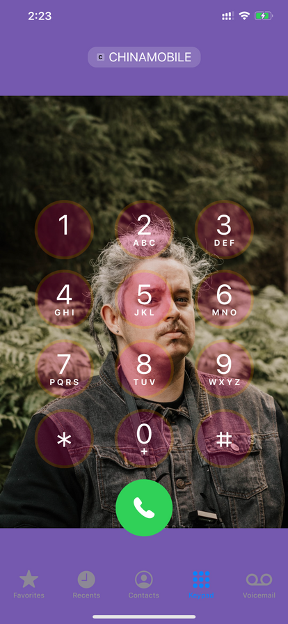
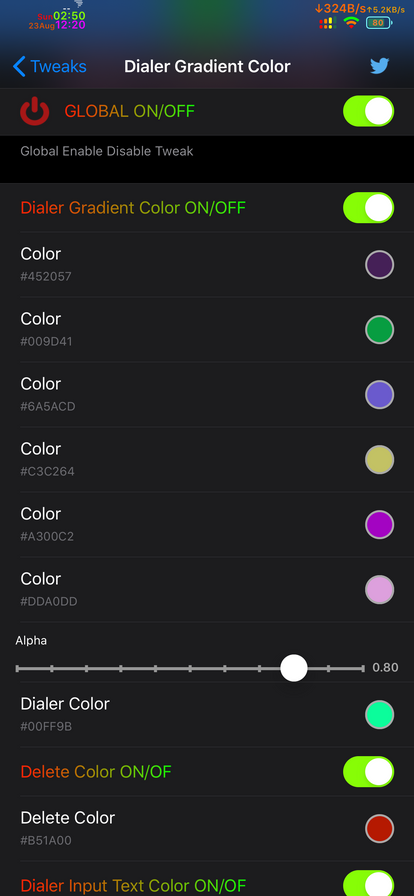
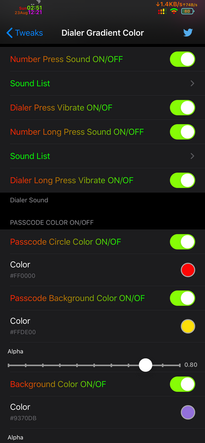
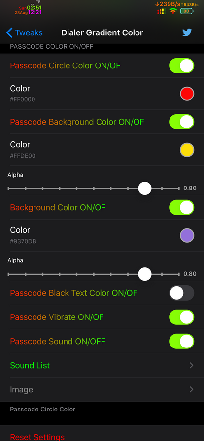
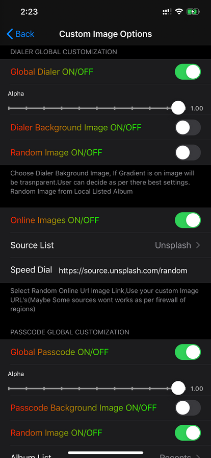
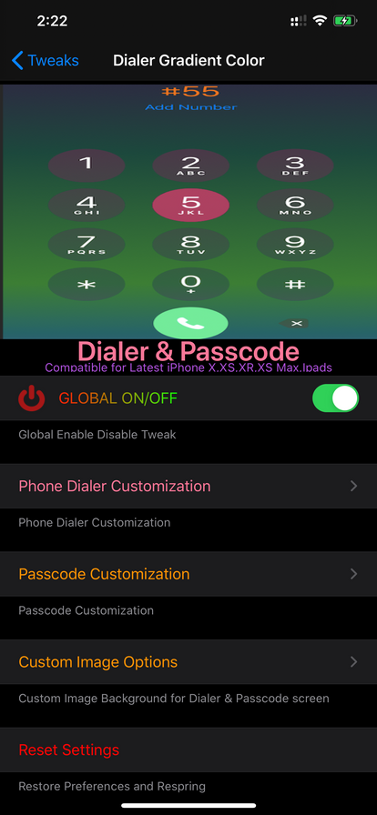

Dialer Tweaking
-Yes you can set background images from local photo albums,
-Random background images from local albums.
-Online images from various sources,You can even provide your own workable images sources link in custom field.
-Longpress for your speed dial for custom number.(Limitied to only one contact)
-Customise dial key sounds.(Change your boring default sounds with vibrate).
-customise long press dial key sounds(Change your boring default sounds with vibrate).
-Custom Gradient Background Colors(Screenshot) or Simple background color.
-Custome Key Highlight colors(Screenshot).
-Custom Dial colors(Screenshot).
-Custom number insert colors(Screenshot).
-Custom delete colors(Screenshot).
Passcode Tweaking
-Yes you can set background images from local photo albums,
-Random background images from local albums.
-Online images from various sources,You can even provide your own workable images sources link in custom field.
-Passcode key sounds.Why not have sounds & vibrate?
-Custom Passcode Circle colors.
-Custom Circle background colors.
-Passcode Bacgkround screen colors.
-Custom Key Highlight NumPad colors(Screenshot).







